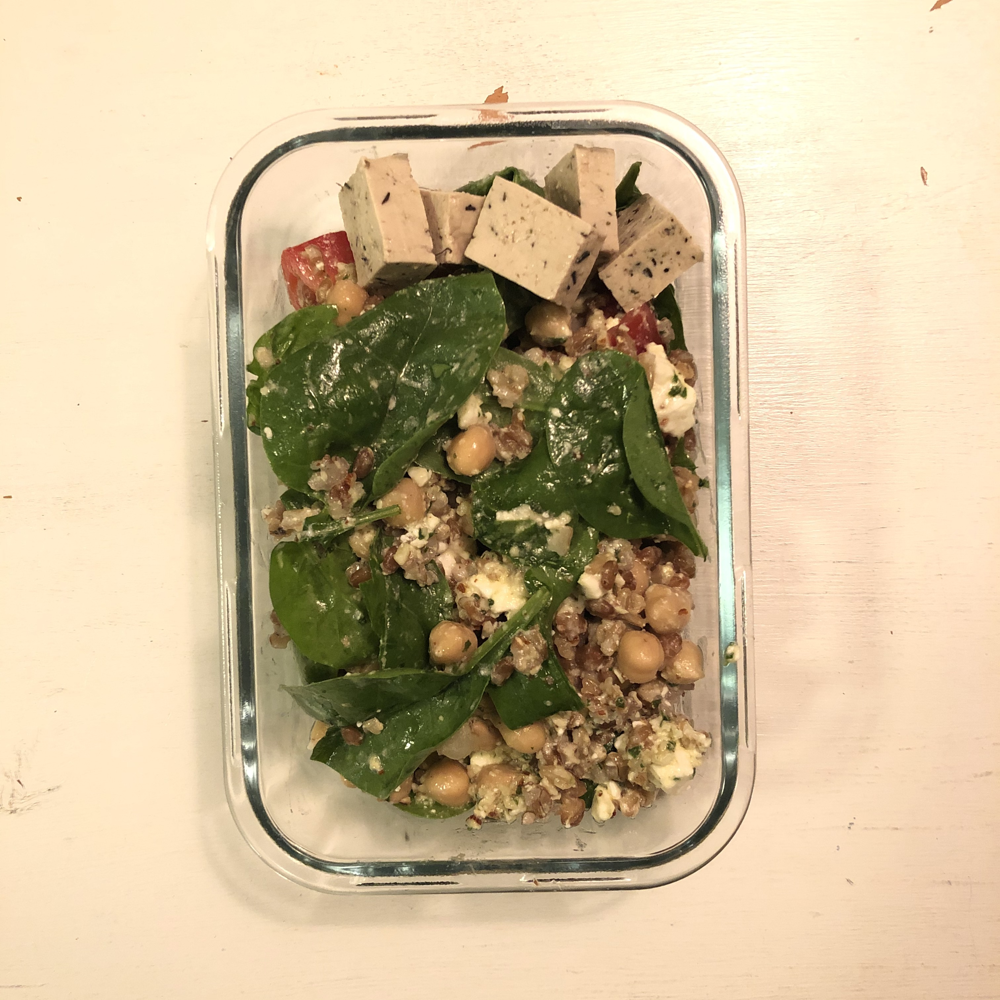

Immelnsallad

Åt den första gången vid Immeln med Olga, Katarina och Izzy. Bra för utflykt!
4 portioner
3 dl kvarngryn
koka i 1,2 l vatten med 1 krm salt i 12 minuter
1 dl mandel - hacka
2 vitlök - pressa
0,75-1 dl olivolja
1 kruka basilika
2 msk citronsaft
1 krm salt
mixa i matberedare, lägg i bunke
1 paket kikärter
8 små tomater - halvera
1 paket babyspenat
1 paket fetaost - smula
ha i, blanda